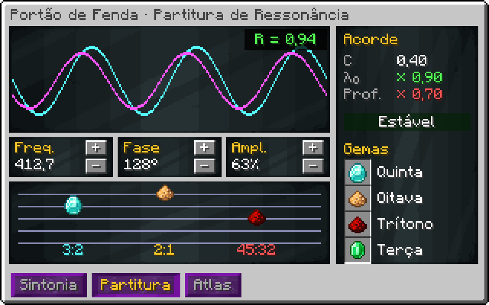
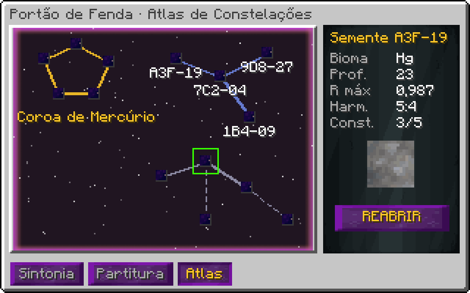

Portão de Fenda Dimensional (UIV)¶
Em desenvolvimento
Esta máquina ainda não está pronta no jogo. A ficha descreve o design aprovado; números e detalhes podem mudar no balanço.
Ficha de design, versão 1.
1. Visão geral¶
- Tipo: exploração de dimensões procedurais. Cada semente é um lugar com saída própria.
- Estrutura: anel vertical 126 × 126 × 54 com 8 espinhos; cada espinho é um Pilone de Âncora.
- Energia: wireless EU (como a Godforge) mais matéria exótica para estabilidade.
- Ciclo: sintonizar → estabilizar → aprofundar → extrair → fechar ou perder a fenda.
2. Sintonia¶
Cada semente esconde um ótimo (f*, φ*, A*). O jogador ajusta frequência f (1–1000 THz), fase φ (0–360°) e amplitude A (0–100%).
R = exp( −((f − f*)/σf)² − (Δφ/σφ)² − ((A − A*)/σA)² ) ressonância, 0..1
σf = 40 THz · 0,8^sondas σφ = 30° · 0,8^sondas σA = 15% · 0,8^sondas
Cada Sonda de Fenda lançada estreita as tolerâncias (σ) daquela semente em 20%. A GUI mostra um padrão de interferência que fica mais nítido com R.
| Sondas | σf (THz) | σφ (°) | σA (%) | Erro para R ≥ 0,9 em f |
|---|---|---|---|---|
| 0 | 40 | 30 | 15 | ±13 THz |
| 2 | 25,6 | 19,2 | 9,6 | ±8,31 THz |
| 4 | 16,4 | 12,3 | 6,14 | ±5,32 THz |
| 6 | 10,5 | 7,86 | 3,93 | ±3,4 THz |
| 8 | 6,71 | 5,03 | 2,52 | ±2,18 THz |
| 10 | 4,29 | 3,22 | 1,61 | ±1,39 THz |
3. Estabilidade¶
dS/dt = κ · ṁ_exótica − λ₀ · (1 − R) · (1 + D/10) − λ_P · (8 − pilones_ativos)
κ = 2 %/L λ₀ = 1,5 %/s λ_P = 0,4 %/s
S vai de 0 a 100. D é a profundidade (seção 4). Em S = 0 a fenda colapsa.
| R | D | Pilones | Matéria exótica para manter S (L/s) |
|---|---|---|---|
| 0.5 | 1 | 8 | 0,413 |
| 0.9 | 1 | 8 | 0,0825 |
| 0.9 | 10 | 8 | 0,15 |
| 0.98 | 10 | 8 | 0,03 |
| 0.98 | 30 | 8 | 0,06 |
| 0.98 | 30 | 6 | 0,46 |
| 0.995 | 60 | 8 | 0,0263 |
4. Profundidade e saída¶
D sobe 1 por âncora de profundidade inserida (item consumível), máximo pelo upgrade
saída/s = B_bioma · R² · D^1,5 · (S/100)
| D | Multiplicador D^1,5 | Tabela liberada |
|---|---|---|
| 1 | 1 | superfície |
| 5 | 11,2 | subsolo |
| 10 | 31,6 | manto |
| 20 | 89,4 | núcleo |
| 40 | 253 | fronteira |
| 80 | 716 | vazio entre dimensões |
4.1 Biomas (sorteados pela semente)¶
| Bioma | Peso | Saída base | Regra própria |
|---|---|---|---|
| Planície cristalina | 30 | gemas, sílica, Ti | — |
| Oceano de mercúrio | 20 | Hg, Au, Tl | R decai 2× mais rápido |
| Mundo-forja | 15 | metais fundidos, magma | aquece os pilones: +calor |
| Floresta de esporos | 15 | biomassa, enzimas, DNA alienígena | saída para a linha de bio |
| Abismo de antimatéria | 8 | traços de antimatéria | ressonância < 0,95 causa aniquilação |
| Relíquia de civilização | 7 | circuitos e ligas desconhecidas | só aparece com D ≥ 20 |
| Vazio | 5 | Matéria de Fenda pura | só com D ≥ 40 |
5. Eventos¶
- Ressonância em cascata: R ≥ 0,98 por 60 s seguidos → chance de 5%/min de Singularidade de Fenda (item raro, usado no upgrade final).
- Colapso: S = 0 → perde as âncoras de profundidade e a fenda fecha. A semente continua anotada.
- Inversão: R < 0,2 por 10 s → a fenda inverte e consome matéria exótica em dobro até fechar.
6. Progressão: Partitura de Ressonância¶
O Portão evolui pelo que o jogador ouve nas fendas. Quando uma fenda fica com R ≥ 0,9 por 30 s, ela deixa gravar um harmônico: uma razão de frequências p:q. Os harmônicos são guardados numa partitura de 5 linhas; o acorde montado nela muda o comportamento do Portão.
6.1 Harmônicos¶
A consonância de um intervalo vem da teoria musical real (intervalos de razões simples soam mais estáveis):
| Intervalo | Razão | Consonância | Onde aparece |
|---|---|---|---|
| Oitava | 2:1 | 1 | qualquer fenda |
| Quinta | 3:2 | 0,387 | planície cristalina |
| Quarta | 4:3 | 0,279 | floresta de esporos |
| Terça maior | 5:4 | 0,231 | oceano de mercúrio |
| Sexta menor | 8:5 | 0,188 | mundo-forja |
| Sétima menor | 9:5 | 0,182 | relíquia de civilização |
| Trítono | 45:32 | 0,0953 | abismo de antimatéria |
| Segunda menor | 16:15 | 0,126 | vazio |
6.2 Acordes¶
O acorde ativo é a soma dos harmônicos na partitura. Consonância alta estabiliza; dissonância aprofunda.
C = média das consonâncias do acorde
λ₀_efetivo = λ₀ · (1,3 − C) acorde consonante gasta menos matéria exótica
D_max_efetivo = D_max · max(0,5; 1 + 3 · (0,3 − C)) acorde dissonante desce mais fundo
| Acorde | C | λ₀ (×) | D_max (×) | Leitura |
|---|---|---|---|---|
| Quinta + Oitava | 0,693 | 0,607 | 0,5 | estável e raso |
| Tríade maior | 0,309 | 0,991 | 0,973 | estável e raso |
| Quarta + Quinta | 0,333 | 0,967 | 0,901 | estável e raso |
| Trítono + Segunda | 0,111 | 1,19 | 1,57 | instável e fundo |
| Sexta + Sétima | 0,185 | 1,12 | 1,35 | instável e fundo |
A partitura é o "loadout" do Portão. Acordes dissonantes são a forma de chegar ao Vazio, mas pedem pilones e matéria exótica de sobra.
6.3 Atlas de constelações¶
No lugar de marcos, cada semente aberta vira uma estrela no Atlas. Sementes próximas ficam ligadas:
Grupos de estrelas ligadas formam constelações. Completar uma constelação (abrir todas as sementes dela) dá um efeito permanente: um harmônico raro, um pilone extra ou a trava de fase daquela região. O Atlas é compartilhado entre jogadores do mesmo time.
6.4 Hatches novos¶
| Hatch | Função |
|---|---|
| Núcleo de Pilone | um em cada espinho; sem ele o pilone não conta |
| Hatch de Matéria Exótica | entrada da estabilidade (L/s) |
| Lançador de Sondas | consome Sondas de Fenda e estreita a sintonia |
| Cofre de Harmônicos | guarda as gemas de harmônico gravadas |
| Hatch de Sintonia | recebe f, φ e A por cover de dados ou computador |
8. Automação¶
A sintonia aceita valores por cover de dados ou computador (OpenComputers/CC). Uma rotina pode varrer f e φ procurando o máximo de R, como os scripts de automação da Godforge.
Estado da implementação¶
No código:
- Estrutura de 126×126×54 convertida da sua construção
- Sintonia, estabilidade, profundidade, harmônicos, partitura e atlas em
RiftCore(testeRiftCoreTest) - Botões de sintonia na GUI; SpaceTime estabiliza; sondas e âncoras pelos barramentos; saída por bioma
- Hatch de Sintonia: sinal de redstone 1–15 define a amplitude
- Render do horizonte de eventos com a cor do bioma; gametest de formação e estabilidade
- Aba gráfica com o sismógrafo da fenda (traço da estabilidade e barra de ressonância)
Falta:
- Aba do atlas (roda de harmônicos, partitura e fendas mapeadas) — feito
- Núcleos de pilone nos espinhos
- Uso da Singularidade de Fenda
- Receita do controlador
Telas (mockup)¶

